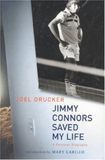

Previous: Beating Lobbers | 🏠 Strategy Home | Next: Doubles Playing Styles
Confessions of a Tennis Disruptor
Comprehensive unified tennis knowledge base — Fundamentals, Stroke Analysis, Reference Library, and more
Confessions of a Tennis Disruptor
Joel Drucker
From an early age my disruptive style was never appreciated.
The concept of disruption is enjoying a new cultural appreciation. Once upon a time disruption was viewed negatively: "World War I disrupted a long peace." Now it has become an object of praise. Uber disrupts Yellow Cab. Netflix disrupts NBC. Salted caramel disrupts butterscotch.
I have been a master of disruption in tennis since I was 12 years old. Alas, I have not received the same type of public praise — nor does it seem likely that I will in my lifetime.
My talent was first acknowledged by an opponent in the summer of 1972., when I was a camper at Tony Trabert Tennis Camp, competing in my first tournament.
After finishing the match and shaking hands, my opponent said, "You are a (adjective deleted) dinker." "I can’t believe you hit shots like that. Can’t you even hit the ball?" Never mind that he had actually won.
Here are a few of the post-match comments (profanity-free versions) that I’ve heard over the years – and my desired but unstated responses:
A core strategy: constantly take off pace.
"You didn’t give me anything to hit."
"Was I supposed to?"
"Sorry I played so badly."
"If you’ve lost, quit whining – I helped you walk to the gas chamber. On the other hand, if you’ve won, you are being quite rude."
"I just couldn’t find a rhythm."
"You wanted rhythm. You got chaos."
"Boy, that was ugly."
"Here’s a ticket to the museum, they have pretty things there."
"You brought my level down with all those no-pace balls."
"Buddy, maybe your real level isn’t what you think."
I am the type of player who almost always loses the warmup and then after the match hears opponents wonder out loud, "How did I lose to this guy?" Usually, they have no idea.
How about a soft slice serve backed up with a surprise volley?
One of my core strategies is to constantly and consistently take pace off the ball. But I like to combine that with the sneak attack; for example, a chip and charge that starts with a cheese doodle slice followed by a carved angle volley hit behind the opponent. Or a soft, wide and low spinning slice serve followed by a surprise serve and volley.
I probe for soft spots and exploit them with delicate but diligent forward movement. For example, backing up that dying slice with a soft short cross court angle, or another favorite, the moon ball approach. When it comes to defense, I frequently lob versus net rushers, particularly early in the match.
These are the tactics a former friend called "greasy." They are the heart and soul of tennis disruption. I am proud to say my game is a passive-aggressive mix that is far more tactically offensive than most opponents are willing to admit.
I idolized the ability of Martina Hingis to help the opponent become an accomplice in his own demise, and also, John McEnroe, the man Arthur Ashe said killed with a "stiletto" rather than a sledgehammer. In my case that would be death by paper cut. But underestimate me at your peril.
Though there is no scientific proof for this, my belief is that every tennis player is issued one genetic gift. Some have the gene for foot speed. Others are naturally smooth. Others are powerful.
My backhand drive has been called pretty by John Newcombe.
My gift is the disruption gene. Eager to regain your groove after a layoff? Don’t call me. Recovering from an injury and looking to get back? Sign my waiver.
The odd thing was that I was taught to strike the ball in what you might call an orthodox fashion. When I learned to play in the early ‘70s on the hard courts of Southern California, the instructional approach was largely based on flat, compact drives.
At Trabert’s camp, I learned a tidy, low-to-high backhand that might not rotate much but could at least dip down at a net rusher’s feet. In subsequent years it was even called "pretty" by John Newcombe.
But save for that stroke, from the start something was amiss in my makeup and mechanics. Certainly I was aided by being left-handed, itself an instant annoyance. I take pride in the fact that the great groundstroke teacher Robert Lansdorp once admitted to me that he didn’t understand left-handers.
Add to this my glasses and a fully grown height of 5’ 7", and we are not talking about a physically imposing court presence. Nor have I ever been one of those athletes who showed up at a picnic and instantly starred in a range of yard sports. Add in my meager coordination, sheer laziness (bad driller) and a heavy resistance to rote and repetitive learning (barely passed French) and you are starting to see the picture.
Is disdain your only response?
You might be tempted to conclude at this point that there is little in this article for you other than a growing sense of disdain. You are a Tennisplayer subscriber after all and you are likely on a quest to strike the ball with world class force.
You may repeatedly hit against ball machines, take lessons, watch videos and drill tirelessly in the pursuit of the one clean hit. You may pride yourself on being able to exchange balls with a hotshot junior or an ex-college player. And who can forget that vacation when you lost to that pro at the resort 6-4?
"The way you hit each ball is interesting," a friend of mine said after suffering another bitter, inexplicable loss. "Do any of the pros do that?" This time I spoke out and said, "Are you kidding?"
As someone who has covered the tour in person for many years, I believe the TV screen blunts the spins and speeds, the textures and shapes of the pro game. I continue to be amazed at the naïve narcissism of students and instructors who place a premium on striking every ball the same way.
So, call me surprised if I ever see the instructional video that tells you to hit three straight balls with different speeds and paces. There is a massive failure among players and many coaches to acknowledge this most basic fact of tennis: there is someone else across the net and the opponent’s game must first be understood before being dismantled.
In the words of Bill Tilden: the object is to break up your opponent’s game.
Tennis is not an individual sport. It is a relationship sport. The two opponents are bound together in a dance. Your mission is the same as a baseball pitcher who mixes up his pitches or a basketball player who makes the guy who shoots better from the left side move to his right.
Ten-time Grand Slam champion Bill Tilden wrote many years ago, "The primary object of tennis is to break up your opponent’s game. Never give your opponent a chance to hit a shot he likes."
Back in 2010, writing an article titled "Winning Ugly, Revisited," I interviewed the man who coined that phrase, Brad Gilbert. In the course of our conversation, I asked Gilbert for his thoughts on a certain tour player who enjoyed slicing his backhand short, occasionally chipped his forehand and served darn well but not quite as fast as many rivals.
"I know who you’re talking about," said Gilbert. "It’s Roger Federer." Winning ugly while looking pretty?
As I head to the court, I am reminded of yet another comment from a tennis mate: "Are you hitting the ball clean and true?"
Now why would I want to do that?"
Joel Drucker is one of the world’s best known tennis writers, having written for years for Tennis and many other publications. He is a consultant and background researcher working with some of the top commentators for the Tennis Channel. Joel is also the author of the book "Jimmy Connors Saved My Life." He lives in Oakland, California and plays regularly at the Berkeley Tennis Club.

"Jimmy Connors Saved My Life"
"Jimmy Connors Saved My Life" is a unique account of the career of the legendary American champion, James Scott Connors, and how it intertwined with the life of the author in a relationship both real and imagined. The book combines the perspective of an intellectual, a devoted tennis player, a professional writer, and a student of society searching for meaning and identity in a defining period of American history, a period in which tennis became a big time, big money, and big media sport.
Click Here to Order!
Source: tennisplayer.net archive — Confessions of a Tennis Disruptor.docx (John Yandell teaching library, 2002-2022). Extracted and rendered as HTML for Tennis Future Lab.